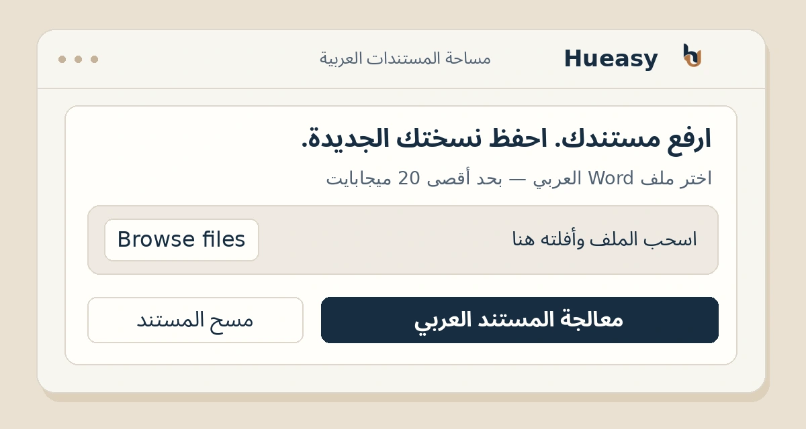
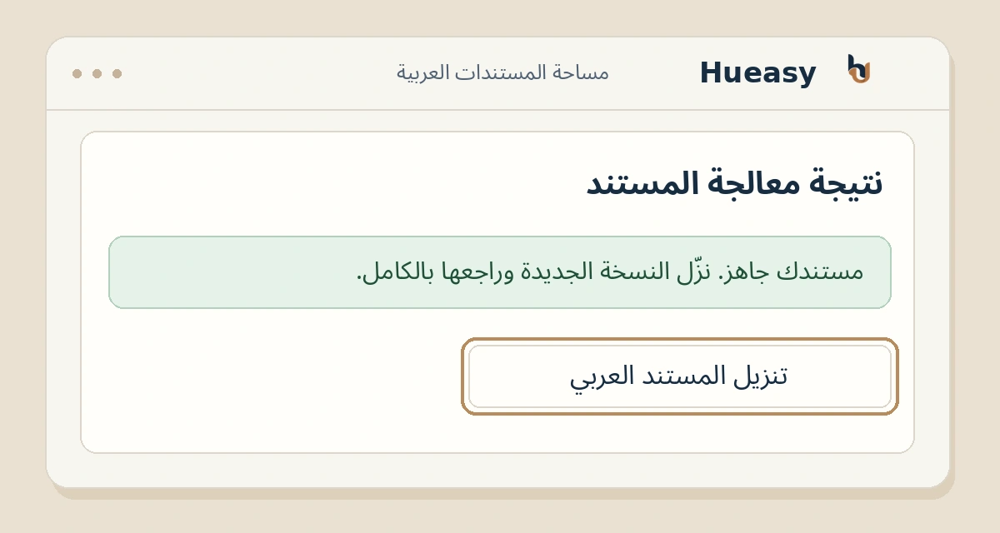

تكبير المعاينة
تكبير المعاينةارفع مستندك
اختر ملف Word (.docx) من جهازك. الحد الأقصى للملف 20 ميجابايت.
ارفع مستندك إلى Hueasy لتحصل على نسخة معاد صياغتها، جاهزة للتنزيل والمراجعة في Word. من اختيار الملف إلى تنزيل النتيجة، كل الخطوات في مساحة عمل واحدة.
شاهد دليل الاستخدام
تكبير المعاينةافتح Hueasy وأدخل كود الوصول، ثم اختر مساحة العمل المناسبة للغة مستندك.
تكبير المعاينةاختر ملف Word (.docx) من جهازك. الحد الأقصى للملف 20 ميجابايت.
 تكبير المعاينة
تكبير المعاينةبعد ظهور اسم الملف، اضغط «معالجة المستند العربي» أو Process Word file في مساحة الإنجليزية والتركية وانتظر حتى تجهز النسخة الجديدة.

تكبير المعاينةاضغط «تنزيل المستند العربي» أو Download processed Word file، ثم افتحه وراجع الصياغة قبل مشاركته أو اعتماده.
إعادة الصياغة تساعدك على جعل الجملة أكثر مباشرة وأسهل قراءة، مع الحفاظ على معناها.
من الجدير بالذكر أن وضوح الأسلوب يسهم بصورة ملحوظة في تسهيل عملية استيعاب القارئ للمحتوى.
يساعد الأسلوب الواضح القارئ على فهم المحتوى بسهولة أكبر.
مساحة مخصصة للمستندات العربية. اطلب تفعيلها على كود اشتراكك.
ارفع مستندًا إنجليزيًا، ثم نزّل النسخة المعاد صياغتها بصيغة Word.
اختر التركية من مساحة الإنجليزية والتركية، واستخدم كود الوصول نفسه.
بعد تجهيز نسخة Word في مساحة الإنجليزية، اضغط Prepare complete LaTeX (.zip)، ثم Download complete LaTeX (.zip) عند اكتمال التجهيز.
فك ضغط الحزمة وافتح main.tex، مع إبقاء مجلدات الصور والخطوط المرفقة بجانبه.
 تكبير المعاينة
تكبير المعاينة
اختر مستند Word بامتداد .docx وبحجم لا يزيد عن 20 ميجابايت. إذا كان مستندك بامتداد .doc، احفظ نسخة منه بصيغة .docx أولًا.
يظهر زر تنزيل ملف Word في مساحة العمل عند اكتمال المعالجة. يظل الملف الأصلي على جهازك، وتُنزل النتيجة كنسخة مستقلة.
تواصل مع فريق Hueasy واطلب تفعيل مساحة العربية على كود اشتراكك الحالي.
يظهر خيار تجهيز الحزمة في مساحة الإنجليزية. في مساحة العربية يمكنك تنزيل المستند المعاد صياغته بصيغة Word.
راسل فريق Hueasy لطلب الكود ومعرفة خيارات الاشتراك.
تواصل مع فريق Hueasy لطلب كود الوصول أو للاستفسار عن الاشتراك.